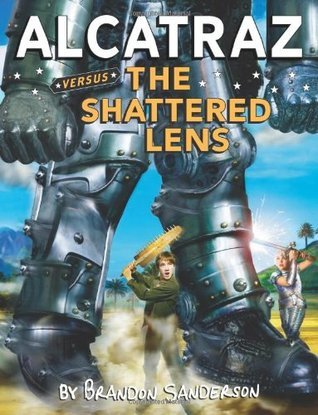

Alcatraz Versus the Shattered Lens
- Read on 2018-09-05
- Rating: ️️️️️
- Format: 🎧 (6 hours 21 minutes)
Another enjoyable installment in this series. If you haven't read the prior three novels, I wouldn't start here. These books in general are silly, witty, and entertaining in a variety of ways - well aimed at the YA audience. This book introduces new characters with funky talents, and cultural elements. I think on this one, it'd be far more difficult to enjoy the book without having the background of the other three, and because of that, I'll deduct a star off of the rating.
- Prior: Alcatraz Versus the Knights of Crystallia
- Next: The Dark Talent